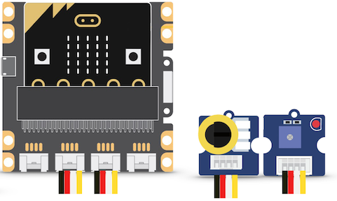
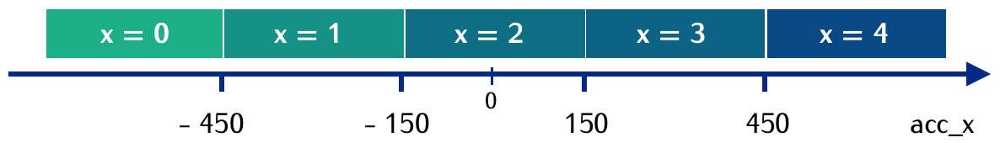

Exercices
1. Afficher une image
1.1 Afficher une image prédéfinie

Voici un premier programme :
from microbit import *
display.show(Image.YES)
- Saisir ce programme et le flasher sur une carte connectée à l'ordinateur.
Que constate-t-on ? - Remplacer dans le programme le mot YES par l'un des mots suivants :
CHESSBOARD - DIAMOND - HAPPY - HEART - NO - SAD - SQUARE - Choisir l'une des images et la reproduire sur une feuille à l'aide d'un quadrillage de 5 carreaux sur 5.
1.2 Afficher une image personnalisée
- Saisir le programme suivant et le flasher sur la carte.
Que constate-t-on ? À quoi correspondent les 0 et les 9 ?
from microbit import *
mon_image = Image("90909:"
"09990:"
"99999:"
"09990:"
"90909")
display.show(Image.mon_image)
- Dessiner sur une feuille à l'aide d'un quadrillage de 5 carreaux sur 5 une image personnelle et modifier le programme précédent pour la faire apparaître sur la carte micro:bit.
1.3 Faire alterner deux images

Créer une animation affichant successivement et en boucle deux images prédéfinies, par exemple Image.SQUARE et Image.SQUARE_SMALL.
Aide : une proposition à compléter
1 2 3 | |
Une solution
1 2 3 | |
2. Faire clignoter une LED
2.1 Faire clignoter une LED de la carte
Choisir l'une des LED de la carte et la faire clignoter.
Aide : une proposition à compléter
1 2 3 4 5 6 7 8 | |
Une solution
1 2 3 4 5 6 | |
2.2 Faire varier le rythme avec un potentiomètre

Placer la carte micro-bit sur le shield Grove et connecter le potentiomètre sur la broche P0-P14.
La fonction pin0.read_analog() renvoie une valeur qui dépend de l'angle de rotation de l'axe du potentiomètre.
- Modifier le programme précédent en ajoutant au début de la boucle
whilel'intruction :mesure = pin0.read_analog()puis en remplaçant les temps durant lesquels la LED est allumée ou éteinte parmesure. - Quel effet observe-t-on sur le clignotement lorsque l'on tourne l'axe du potentiomètre ?
Une solution
1 2 3 4 5 6 7 | |
2.3 Faire clignoter la LED du kit Grove

Connecter la LED sur le shield Grove sur la broche P1-P15 ( en plus du potentiomètre déjà connecté sur la broche P0-P14).
L'instruction pin1.write_digital(1) permet d'allumer la LED lorsqu'elle est sur la broche P1, et l'instruction pin1.write_digital(0) permet de l'éteindre.
- Modifier le programme précédent pour faire clignoter la LED Grove, au lieu d'une LED de la carte.
- Le potentiomètre conserve-t-il son effet ?
Une solution
1 2 3 4 5 6 7 | |
3. Déplacer un pixel
3.1 Programmer le déplacement d'un pixel sur la carte
- Lire le programme suivant et anticiper l'effet produit sur la carte micro:bit :
1 2 3 4 5 6
from microbit import * while True: for x in range(5): # x prend les valeurs 0 à 4 display.set_pixel(x, 0, 9) sleep(300) display.clear() - Saisir ce programme et le flasher sur une carte micro:bit. Vérifier si l'effet constaté correspond à celui anticipé.
- Indenter l'instruction
display.clear()pour qu'elle soit alignée avec lesleep(300)de la ligne 5. Quel effet cela a-t-il sur l'affichage produit sur la carte ? Pourquoi ? - Poursuivre le programme précédent pour que le pixel allumé fasse le tour du carré de 25 LED.
Aide : une proposition à compléter
1 2 3 4 5 6 7 8 9 10 11 12 13 14 15 16 17 18 | |
Une solution
1 2 3 4 5 6 7 8 9 10 11 12 13 14 15 16 17 18 | |
3.2 Programmer le déplacement d'un pixel sur le ruban NeoPixel
- Placer la carte micro-bit sur le shield Grove et connecter le ruban de led NeoPixel sur la broche P0-P14.
-
Lire le programme suivant et anticiper l'effet produit sur le ruban NeoPixel : quels pixels sont allumés, dans quel ordre, de quelle(s) couleurs(s) ?
1 2 3 4 5 6 7 8 9 10 11
from microbit import * import neopixel # pour une connexion sur connecteur P0/P14 np = neopixel.NeoPixel(pin0, 30) while True: for x in range(30): # x prend les valeurs 0 à 29 np[x] = (255, 0, 0) sleep(200) np.show() np.clear() -
Saisir ce programme et le flasher sur une carte micro:bit, connectée. Vérifier si l'effet constaté correspond à celui anticipé.
- Indenter l'instruction
np.clear()pour qu'elle soit alignée avec lenp.show()de la ligne 10. Quel effet cela a-t-il sur l'affichage produit sur le ruban ? Pourquoi ? - Modifier une valeur du programme pour augmenter la "vitesse" du pixel.
- Modifier une ou plusieurs valeurs pour que le pixel allumé soit jaune.
- Poursuivre le programme précédent pour que le pixel allumé fasse des allers-retours entre les deux extrémités du ruban.
3.3 Déplacer un pixel sur la carte avec les boutons
Fonctionnement attendu : Une led est allumée au centre de l'écran. En appuyant sur le bouton A, elle se "déplace" d'un pixel vers la gauche, et en appuyant sur le bouton B, elle se "déplace" d'un pixel vers la droite. Lorsqu'elle atteint un bord (gauche ou droit), l'appui sur le bouton correspondant à ce bord n'a plus d'effet.
Aide : une proposition à compléter
1 2 3 4 5 6 7 8 9 10 11 12 13 14 15 | |
Une solution
1 2 3 4 5 6 7 8 9 10 11 12 13 | |
3.4 Déplacer un pixel sur un ruban NeoPixel avec les boutons
Fonctionnement attendu : Une led NeoPixel est allumée au début du ruban de led NeoPixel. En appuyant sur le bouton A, la led allumée se "déplace" d'un pixel vers la fin du ruban, et en appuyant sur le bouton B, elle revient d'un pixel vers le début du ruban. Lorsque la led allumée atteint une extrémité, l'appui sur le bouton correspondant à cette extrémité n'a plus d'effet.
Aide : une proposition à compléter
1 2 3 4 5 6 7 8 9 10 11 12 13 14 15 16 17 18 | |
Une solution
1 2 3 4 5 6 7 8 9 10 11 12 13 14 15 16 17 18 | |
3.5 Déplacer un pixel avec l'inclinaison de la carte
On souhaite déplacer un pixel sur l'écran en fonction des valeurs des inclinaisons gauche-droite et avant-arrière de la carte, comme une bille qui se déplacerait sur un plan incliné.
On utilise la valeur détectée pour accelerometer.get_x() (inclinaison gauche-droite) et accelerometer.get_y() (inclinaison avant-arrière) et selon leur valeur, on donne à l'abscisse x et à l'ordonnée y d'un pixel allumé la valeur 0, 1, 2, 3 ou 4.
Par exemple, voici la valeur que l'on peut donner à x selon la valeur de accelerometer.get_x() :

- Compléter le programme suivant pour qu'il respecte les indications précédentes pour déterminer la valeur de
x.
from microbit import *
x = 2
y = 2
while True:
display.set_pixel(x,y,0)
acc_x = accelerometer.get_x()
if acc_x > ...:
x = 4
elif acc_x > 200:
x = ...
elif acc_x < -400:
x = ...
elif acc_x < ...:
x = 1
else:
x = ...
display.set_pixel(x,y,9)
sleep(100)
- Saisir le programme et le flasher sur une carte connectée à l'ordinateur. Vérifier si le comportement anticipé est conforme à celui observé.
- Compléter le programme en procédant de façon analogue pour déterminer la valeur que doit en prendre l'ordonnée du pixel
yselon les valeurs deaccelerometer.get_y()
4. Détecter l'intensité lumineuse
4.1 Avec les leds de la carte micro:bit
Les LED de la carte peuvent détecter le niveau de lumière ambiante : la fonction display.read_light_level() renvoie une valeur comprise entre 0 et 255 : plus la valeur est élevée, plus l'environnement est lumineux.
from microbit import *
while True:
niveau = display.read_light_level()
if niveau > 220:
display.show(Image.YES)
else :
display.show(Image.NO)
sleep(200)
- Saisir ce programme et le flasher sur une carte connectée à l'ordinateur.
Que faut-il faire pour que l'image Image.YES s'affiche ? - Modifier ce programme pour que la carte affiche un carré en luminosité "normale" et un diamant dans la pénombre.
4.2 Avec un capteur de lumière Grove

Placer la carte micro-bit sur le shield Grove et connecter le capteur de lumière sur la broche P0-P14.
La fonction pin0.read_analog() renvoie une valeur entière d'autant plus élevée que l'environnement est lumineux.
Saisir et flasher le programme suivant :
from microbit import *
while True:
mesure = pin0.read_analog()
if mesure > 600:
display.show(Image.YES)
else :
display.show(Image.NO)
sleep(100)
- Que peut-on faire pour que l'image Image.NO s'affiche sur la carte micro:bit ?
- Emballer le capteur (connecté à la carte) dans une feuille de papier. Modifier le programme pour que la carte affiche l'image Image.YES tant que le capteur reste emballé et l'image Image.NO dès que l'emballage est ouvert.